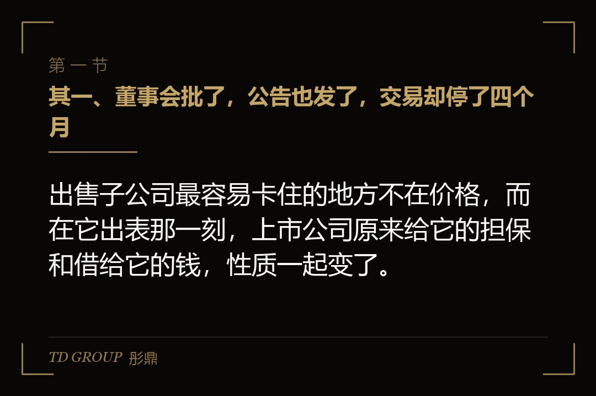
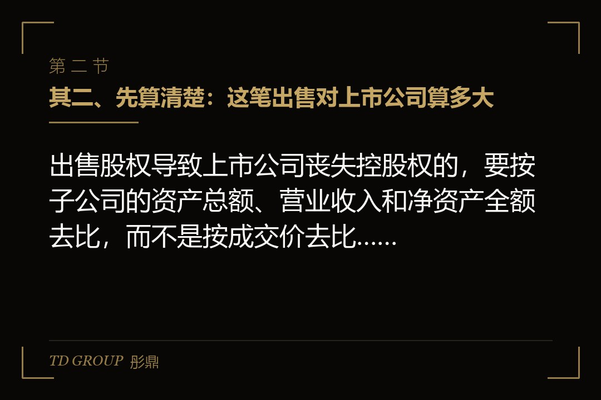
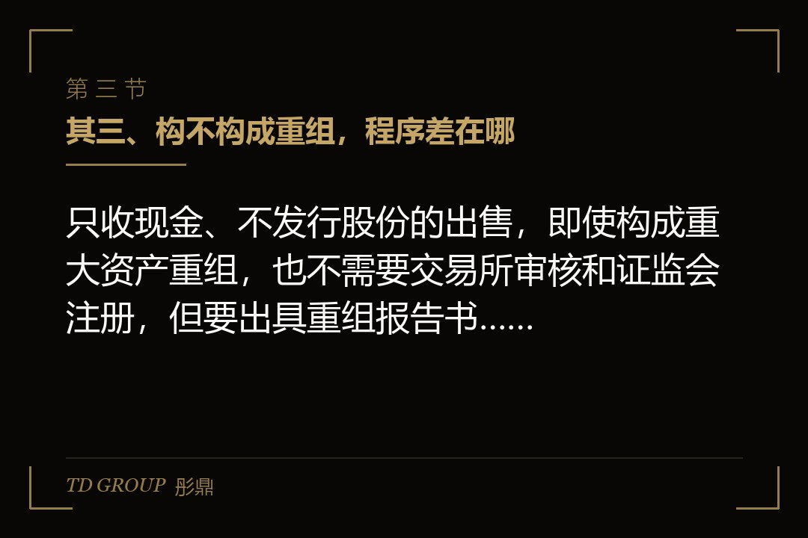

其一、董事会批了，公告也发了，交易却停了四个月

结论先行：出售子公司最容易卡住的地方不在价格，而在它出表那一刻，上市公司原来给它的担保和借给它的钱，性质一起变了。
假设有家在沪市主板上市的家电零部件公司，三年前跨行做了一家光伏组件子公司，由上市公司全资持有。子公司连着三年亏损，拖累合并报表。控股股东表示愿意接手：由他控制的一家公司，按评估值买下子公司全部股权。
董事会审议通过，公告发出去，市场的解读大多是甩掉包袱。一周后，交易所的问询函到了，问题不多，但每一条都点在要害上。
子公司的银行借款里，有三亿元是上市公司提供的连带责任保证，期限还有两年。另外，这几年上市公司陆续借给子公司一亿二千万元的经营周转款，账上挂着其他应收款。股权一过户，子公司就成了控股股东控制的企业。
问询函问的正是这两笔：交易完成后，这三亿担保是不是变成了对关联方的担保，履行了什么程序；这一亿二千万是不是会形成关联方对上市公司的资金占用，打算怎么解决、什么时候解决。公司答不上来，交易就此停了四个月。
其二、先算清楚：这笔出售对上市公司算多大

结论先行：出售股权导致上市公司丧失控股权的，要按子公司的资产总额、营业收入和净资产全额去比，而不是按成交价去比，十二个月内分次卖的还要累计。
很多人以为，子公司作价只有几千万，对一家营收几十亿的上市公司不算大事。规则的算法不是这样。《上市公司重大资产重组管理办法》第十四条规定，出售股权导致上市公司丧失被投资企业控股权的，资产总额、营业收入和资产净额分别以被投资企业的对应数据为准。
也就是说，要拿子公司的全部资产总额，去比上市公司最近一个会计年度经审计的合并资产总额。重组办法第十二条的标准是：资产总额占比达到百分之五十；或者营业收入占比达到百分之五十且超过五千万元；或者资产净额占比达到百分之五十且超过五千万元，满足其一就构成重大资产重组。
这家光伏子公司资产总额不小，账面净资产却因为连年亏损被吃掉了大半。所以常见的情况是，按净资产算不到线，按资产总额算却可能摸到线。算的时候三个指标要分别算，不能只挑对自己有利的那一个。
第十四条还规定，上市公司在十二个月内连续对同一或者相关资产进行购买、出售的，以累计数分别计算。假设公司原本打算先卖百分之四十九、半年后再卖剩下的百分之五十一，这两笔要合在一起看，拆成两次并不能绕开重组的认定。
其三、构不构成重组，程序差在哪

结论先行：只收现金、不发行股份的出售，即使构成重大资产重组，也不需要交易所审核和证监会注册，但要出具重组报告书、聘请中介机构并经股东会特别决议。
构成重大资产重组的，要按重组办法的要求编制重组报告书，聘请独立财务顾问、律师、会计师和评估机构，提交股东会审议，并经出席会议的股东所持表决权的三分之二以上通过。卖给关联方的，关联股东回避表决。
因为这笔交易只收现金、不涉及上市公司发行股份，也不构成重组上市，按全面注册制之后的规则，不需要报交易所审核，也不需要证监会注册。这是它比发行股份购买资产简单的地方，但文件准备和问询回复的工作量并不小。
没有构成重大资产重组，也不等于董事会批了就行。以《上海证券交易所股票上市规则（2026年4月修订）》为例，第6.1.5条规定，交易将导致上市公司合并报表范围发生变更的，要以该股权对应的标的公司的相关财务指标作为计算基础。
按第6.1.3条，资产总额占上市公司最近一期经审计总资产百分之五十以上等情形，要提交股东会审议。第6.1.15条还规定，购买或者出售资产，不论标的是否相关，资产总额或者成交金额在连续十二个月内累计超过公司最近一期经审计总资产百分之三十的，要提交股东会审议，并经出席会议的股东所持表决权的三分之二以上通过。
本质上，规则关心的是这件事对上市公司有多大影响，而不是这份合同写了多少钱。一家子公司对外只卖几千万，出表带走的可能是几十亿的资产和收入。
其四、买家是大股东，关联交易那一关怎么过
结论先行：卖给控股股东控制的企业，是一笔关联交易，达到标准的要披露审计或评估报告、提交股东会，关联董事和关联股东回避，价格公允要经得起中小股东的追问。
按上交所上市规则第6.3.7条，上市公司与关联人发生的交易金额在三千万元以上，且占最近一期经审计净资产的百分之五以上的，要披露审计报告或者评估报告，并提交股东会审议。董事会审议时关联董事回避，股东会审议时关联股东回避。
回避意味着，这笔交易最终由中小股东说了算。大股东自己持股再多，这一票也投不上。所以定价的依据要能拿到台面上讲清楚：评估方法是什么、为什么选这个方法、评估值比账面值高还是低、差在哪里。
这家公司最初的评估报告用的是资产基础法，评估值略高于账面净资产。中小股东在说明会上追问的是另一件事：子公司名下有一块工业用地，账面按十几年前的取得成本记，周边的土地价格早就翻了几倍，评估里这块地是怎么算的。
公司后来请评估机构补充说明了土地的评估过程，价格也做了调整。事后看，这一步本该在董事会之前就做完。关联方买上市公司的资产，价格偏低会被质疑掏空上市公司，偏高也会被质疑在做利润，两头都要有依据。
其五、那三亿担保：出表之后变成了关联担保
结论先行：交易导致被担保方成为上市公司关联人的，要在实施交易的同时就存续的关联担保履行审议和披露，审议没通过的，交易各方要采取提前终止担保等措施。
子公司还是上市公司全资子公司的时候，这三亿担保是对控股子公司的担保，审议程序早就走过了。股权一过户，被担保方变成了控股股东控制的企业，同一份保证合同，性质就变成了为关联方提供担保。
上交所上市规则第6.3.11条对此写得很直接：公司因交易或者关联交易导致被担保方成为公司的关联人，在实施该交易的同时，应当就存续的关联担保履行相应审议程序和信息披露义务；董事会或者股东会未审议通过的，交易各方应当采取提前终止担保等有效措施。
审议的门槛也不低。为关联人提供担保，要经全体非关联董事过半数、并经出席董事会的非关联董事三分之二以上同意，再提交股东会。证监会《上市公司监管指引第8号》第九条、第十一条还规定，对股东、实际控制人及其关联方的担保须经股东会审批，相关股东回避，并且控股股东、实际控制人及其关联方应当提供反担保。
实际操作中，更干净的办法通常是让担保退出来：跟银行谈，由控股股东或者他指定的主体替换成新的担保人，或者子公司在交割前把这部分借款还掉、重新以新股东的信用去借。这家公司最后选的是替换担保人，光是跟三家银行分别谈，就用了两个多月。
其六、那一亿二千万：交割之前必须收回来
结论先行：出售资产可能导致交易完成后控股股东及其关联人对上市公司形成非经营性资金占用的，要在公告中写明解决方案，并在交易实施完成前解决。
子公司欠上市公司的一亿二千万，原来是集团内部的往来款，合并报表里一抵销就看不见。子公司一出表，这笔钱就成了控股股东控制的企业欠上市公司的钱，而且不是因为买卖商品或者服务形成的。
证监会《上市公司监管指引第8号》第五条列举了上市公司不得向控股股东、实际控制人及其他关联方提供资金的几种方式，其中就包括有偿或者无偿地拆借资金给他们使用。出表之后还挂在账上的这笔钱，正好落进这一条。
上交所《上市公司自律监管指引第5号——交易与关联交易》第二十四条规定，上市公司因购买或者出售资产可能导致交易完成后控股股东、实际控制人及其他关联人形成非经营性资金占用的，应当在公告中明确合理的解决方案，并在相关交易实施完成前解决。关键在于「实施完成前」这几个字，不是交割之后慢慢还。
占用一旦形成，后果写在上市规则第9.8.1条里：被控股股东及其关联人非经营性占用资金，余额达到最近一期经审计净资产的百分之五以上或者超过一千万元，一个月内没有清偿或整改的，股票被实施其他风险警示。这家公司最后的方案，是在股权转让协议里约定：买方先代子公司把一亿二千万往来款还给上市公司，还清之后才办股权过户，交易价款和还款分开走、分开披露。
其七、卖掉子公司的收益，救不了扣非净利润
结论先行：出售子公司产生的投资收益属于非经常性损益，主板退市风险警示看的是利润总额、净利润和扣非净利润三者孰低，指望卖资产做出利润，规则上是走不通的。
有的公司出售资产，心里还有另一本账：今年主营亏了，卖掉子公司确认一笔投资收益，报表就能转正。这笔账在规则面前算不通。按证监会关于非经常性损益的解释性公告，非流动性资产处置损益属于非经常性损益。
上交所上市规则第9.3.2条规定，最近一个会计年度经审计的利润总额、净利润或者扣除非经常性损益后的净利润孰低者为负值，且营业收入低于三亿元的，对股票实施退市风险警示。出售收益能改变净利润，却改变不了扣非净利润，孰低的那个数还是负的。
买家是大股东时还有一层。证监会《监管规则适用指引——会计类第1号》对权益性交易的口径是：股东、实际控制人对上市公司单方面的利益输送，比如捐赠、债务豁免，经济实质是资本投入，形成的利得计入所有者权益。关联方明显高于公允价值买走资产，溢价部分也可能被按这个思路审视，进不了当期损益。
因此，出售亏损子公司真正的价值，是以后不再每年亏这一块、不再为它的借款担保、管理层能把精力放回主业，而不是出售当年报表上那一笔收益。把这个目的写清楚，中小股东和交易所的问询反而好回答。
其八、出售之前，把这几张表先拉出来
结论先行：出售子公司之前，先拉出担保、往来款、交易指标和员工与业务四张清单，每一项在交割前怎么了结写进协议，交易才不会停在问询函上。
头一张是担保清单：上市公司及其他子公司为这家子公司提供的所有担保，金额、期限、债权银行，交割后怎么处理，替换、解除还是审议后保留并要求反担保。第二张是往来款清单：子公司欠上市公司多少、上市公司欠子公司多少，哪些是经营性的、哪些不是，交割前怎么清。
第三张是交易指标测算：按子公司全额的资产总额、营业收入、净资产去算，把过去十二个月里对同一或者相关资产的交易加进去，判断是否构成重大资产重组、要不要上股东会、要不要三分之二通过。第四张是员工、合同和业务：子公司的员工跟谁走，共用的客户和供应商怎么分，卖给大股东之后会不会跟上市公司做同样的业务。
第四张里最容易被漏掉的是业务重叠。控股股东买下子公司之后，如果子公司的业务跟上市公司剩下的业务有重叠，就会带出同业竞争的问题，怎么承诺、什么时候解决，也要在方案里写明。
回到开头那家公司。要是重来一次，你会先去跟银行谈担保替换，再开董事会；还是先把交易公告出去，用公告去推银行？两种顺序各有代价，你会怎么选？